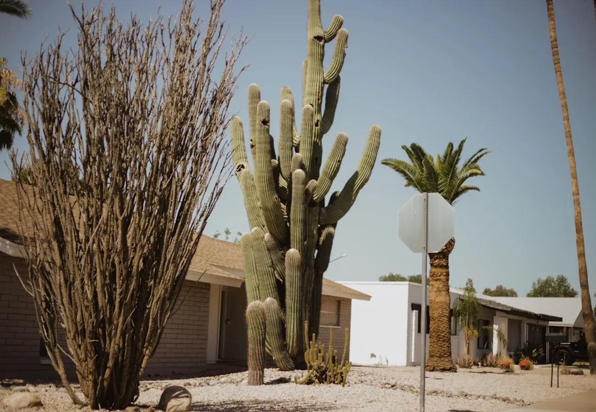

Ten she works constantly, and the rest of the valley besides. Tap any one for what it is actually like to live there.
How to read this
North Scottsdale is not one market. Troon North and Old Town are half an hour apart and share almost nothing: one is large custom lots against the desert preserve, the other is mid-rise condominiums over a gallery district.
These ten are the communities Kathy works constantly and can talk about street by street. She sells across Scottsdale and the north valley besides, so if your search sits outside the list, ask anyway. Every card opens onto what the place is actually like, the housing you will find, and links to the community's own association or club.
Troon North sits in far north Scottsdale near Pinnacle Peak Park, where the High Sonoran Desert is at its most theatrical. Giant saguaros, granite boulder formations and long sightlines across the valley set the tone for the whole community.
The neighborhood is built around Troon North Golf Club and its two desert courses. Lots run large and density stays low, so homes sit apart from one another rather than shoulder to shoulder. Architecture leans southwestern and contemporary desert. Trailheads for hiking and mountain biking are minutes from most front doors.
Troon North Golf Club · Scottsdale's McDowell Sonoran Preserve
Explore Troon North Ask Kathy
DC Ranch runs along the base of the McDowell Mountains and is one of the most recognized master-planned communities in north Scottsdale. It is organized as a set of villages rather than a single tract, which is why the architecture varies so much from one street to the next.
Housing spans custom homes, single-family neighborhoods and luxury townhomes. Market Street is the community's own main street, with shops and restaurants inside the community rather than a drive away. Residents have community centers, pools, tennis, and direct access to desert trails, and private golf sits within the community boundary.
DC Ranch Community Council · Scottsdale's McDowell Sonoran Preserve
Explore DC Ranch Ask Kathy
Desert Highlands sits just south of Pinnacle Peak in the 85255 zip code. The site plan is environmentally sensitive by design: natural desert landscaping is retained rather than replaced, and architectural controls are strict, which is why the community reads as a single considered piece rather than a collection of individual statements.
Ownership here is unusual. Buying a property carries mandatory club membership rights in the Desert Highlands Country Club, so the club is not an optional add-on. That gives access to the 18-hole Jack Nicklaus championship course, an 18-hole putting course, thirteen tennis courts across grass, clay and hard surfaces, a fitness center and club dining. Homes are custom estates and hillside villas.
Desert Highlands · Pinnacle Peak Park, City of Scottsdale
Explore Desert Highlands Ask Kathy
Grayhawk is one of north Scottsdale's most established communities and one of its most varied. Guard-gated luxury subdivisions sit alongside standard single-family neighborhoods and resort-style condominiums, so the entry point into Grayhawk is much wider than its reputation suggests.
Grayhawk Golf Club anchors the community with two championship courses, the Raptor and the Talon, both open to the public rather than members only. Greenbelts, pocket parks and walking paths thread through the neighborhoods. Grayhawk lies within the Paradise Valley Unified School District.
Grayhawk Golf Club · Paradise Valley Unified School District
Explore Grayhawk Ask KathyMcDowell Mountain Ranch is built up against the McDowell Sonoran Preserve, and that adjacency is the whole point of the community. Trailheads connect directly to more than two hundred miles of preserve trails, so the desert is not somewhere you drive to.
Inside the community there are multiple community centers, heated pools, splash pads and sport courts. The McDowell Mountain Ranch Aquatic Center and the Arabian Library both sit close by. Housing is largely single-family, with a range of sizes across the different villages.
McDowell Mountain Ranch Community Association · Scottsdale's McDowell Sonoran Preserve
Explore McDowell Mountain Ranch Ask KathyMcCormick Ranch is the green one. Historic ranch land was transformed into a sprawling community built around man-made lakes and generous greenbelts, and decades on, the trees have matured into something you do not otherwise find in the desert.
Two public championship golf courses sit inside the community, along with miles of walking and cycling paths. Housing is a mix of single-family ranch homes, waterfront properties on the lakes, and lower-maintenance patio homes. Central Scottsdale amenities are minutes away rather than a highway drive.
McCormick Ranch Property Owners Association · City of Scottsdale parks
Explore McCormick Ranch Ask KathyGainey Ranch is a resort-style community in central Scottsdale, laid out around a 27-hole private golf system and the resort grounds that share the site. It is one of the most recognizable addresses in the central part of the city.
Guard-gated enclaves inside the community hold single-family residences, townhomes and low-maintenance luxury condominiums, which makes it work for buyers at very different stages. The central location means major shopping, fine dining and medical facilities are all close.
Experience Scottsdale · City of Scottsdale
Explore Gainey Ranch Ask Kathy
Kierland sits along the north Scottsdale corridor and is built on a live, work and play premise. Two of the valley's best-known outdoor shopping districts, Kierland Commons and Scottsdale Quarter, are directly walkable from much of the community.
Housing runs the full range: low-maintenance luxury apartments, high-rise condominiums, single-family suburban homes and golf course residences. For buyers who want to leave the car parked, this is the most genuinely walkable option in north Scottsdale.
Kierland Commons · Scottsdale Quarter
Explore Kierland Ask Kathy
Old Town is the cultural, dining and shopping heart of Scottsdale, and the only part of the city where walkability is the headline rather than a bonus. Art galleries, nightlife, local boutiques and Scottsdale Fashion Square are all within the district.
Housing here is unlike anywhere else in the city: modern luxury mid-rise condominiums and townhomes sit alongside historic single-story ranch homes, sometimes on the same block. It suits buyers who want to be in the middle of things rather than looking at the desert.
Old Town Scottsdale · Experience Scottsdale
Explore Old Town Scottsdale Ask KathyThe Cactus Corridor runs between Shea Boulevard and Bell Road, roughly along 90th through 116th Streets. It is the part of Scottsdale that kept its horses. Lots are large, often a full acre or more, setbacks are deep, and much of the corridor has no restrictive homeowners association at all.
Housing is sprawling mid-century ranch homes, updated custom desert estates, and equestrian properties with stables and horse facilities. Despite the rural feel, Kierland Commons, major medical centers and highway access are all minutes away.
City of Scottsdale zoning and planning · Maricopa County Assessor
Explore Cactus Corridor Ask Kathy
The common thread
Every community on this page was chosen for the same reason. It is what North Scottsdale buyers are actually choosing between, and it is the question the listing photographs never answer.
Ask about a communityAnswers
It depends far more on how you want to spend a Saturday than on square footage. Golf and quiet points you north to Troon North or Desert Highlands. Walkability points you to Old Town or Kierland. Trails point you to McDowell Mountain Ranch. Kathy will narrow it in one conversation.
Desert Highlands does: membership rights come with the property, so the club is part of the cost of ownership rather than an option. Others have private clubs you can join separately. Ask before you tour, because it changes the monthly number materially.
Grayhawk and Gainey Ranch both contain guard-gated enclaves alongside non-gated neighborhoods, and DC Ranch is organized as villages with a mix. Gating varies street by street rather than community by community.
Ask. Kathy sells across Scottsdale and the north valley. The ten are simply where she is deepest, not the limit of where she works.
The Cactus Corridor is the main one. Much of it has no restrictive association at all, which is part of why it kept its acre lots and its horses.
The districts are a matter of public record and each community card links to the relevant one. Fair housing rules mean Kathy will point you to the district's own data rather than characterize schools for you, and that is the more reliable source anyway.

Tell Kathy how you want to spend your Saturdays and she will tell you which two to look at first.
Ask Kathy